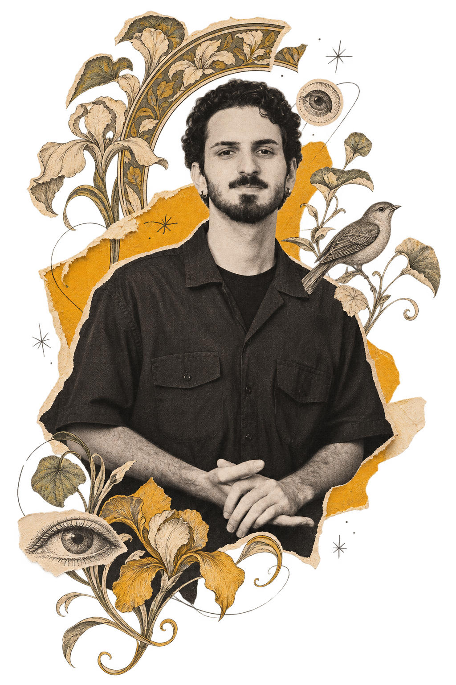
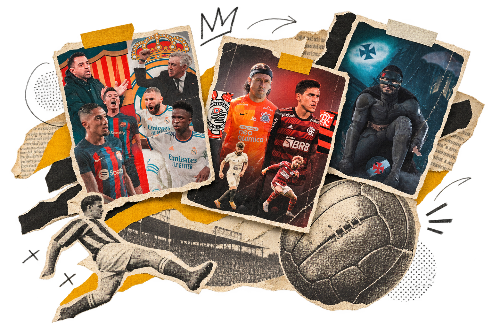
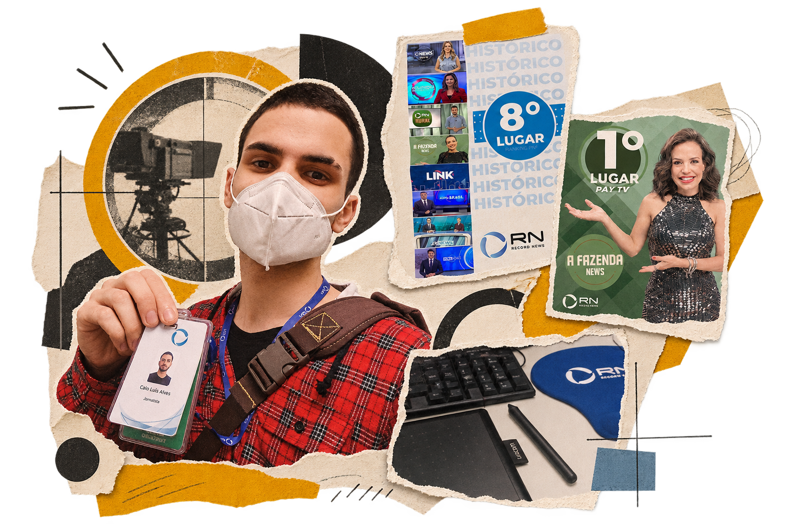
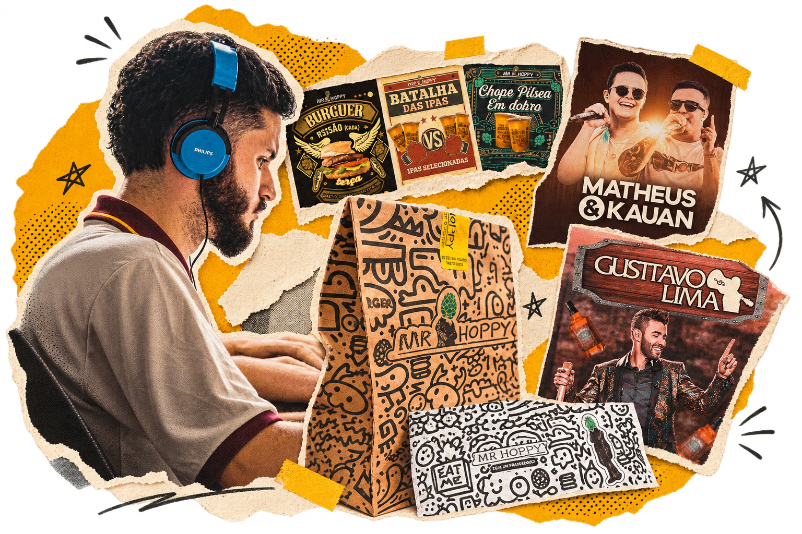
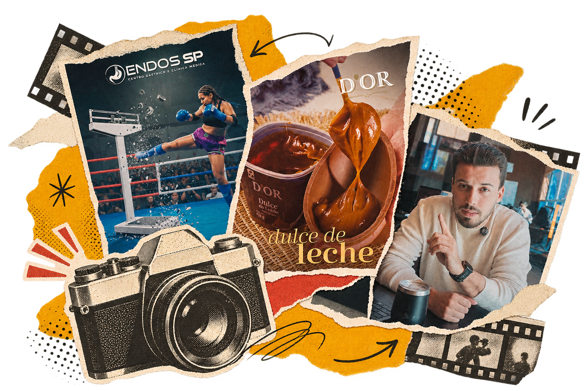
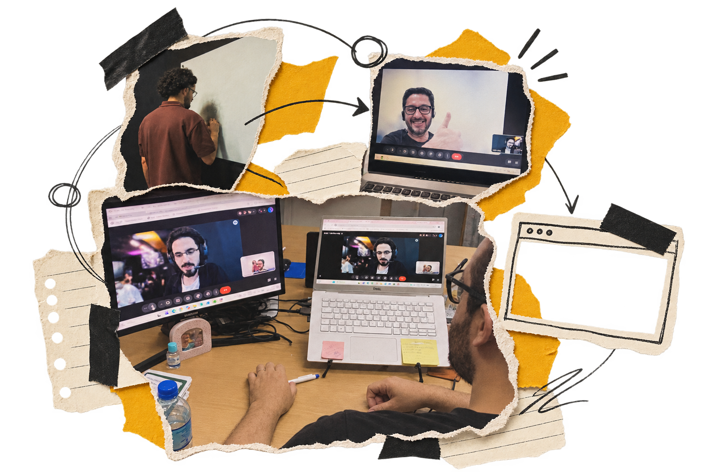

Da ideia
à entrega.
Sou Caio Cara. Crio identidades, conteúdos e páginas. Trabalho com campanhas e coordeno projetos com clientes e equipes.
Conheça meu trabalho ↓um caminho feito na prática

Antes das campanhas,
veio o futebol.
Comecei como freelancer, criando peças para jogadores, equipes e páginas nas redes sociais. Também anunciei meu próprio trabalho. O contato com mídia paga começou ali.
Design esportivo / primeiros projetosDa minha mesa
para uma emissora.
Entrei na Record News como jovem aprendiz. Trabalhei com peças de comunicação, identidades para programas e motion graphics. A criação passou a fazer parte da rotina de uma grande equipe.
Algumas peças dessa fase ↓
Do palco
à embalagem.
Na Spazio, trabalhei como designer gráfico pleno. Criei flyers de shows, peças para redes sociais e campanhas com referências do rock.
Também desenvolvi embalagens para a rede Mr. Hoppy, utilizadas em todo o Brasil. O repertório crescia entre a divulgação de um show e o produto que chegava à mesa.
Cartazes, campanhas e design que circula.

O trabalho
ganhou movimento.
A experiência com criativos para mídia paga ganhou outra dimensão na Endos SP: assumi os anúncios e a aquisição de interessados. Roteiro, gravação e edição ampliaram minha forma de contar histórias.
Uma boa oferta
precisa ser
encontrada.
Na Veduc, ampliei minha atuação com campanhas no Google. No Portal Anhanguera, trabalhei no web design, SEO e GEO: conteúdo organizado para ser encontrado nas buscas e nas respostas de ferramentas como o ChatGPT. Também coordenei o projeto como Customer Success.
Mais de 100 leads orgânicos por recomendações de IA, incluindo o ChatGPT.
Conheça o Portal Anhanguera ↗

O trabalho também aparece nos números.
Dois recortes de captação na educação. As conversas começaram nos anúncios; as matrículas foram registradas nos períodos dos relatórios.
No Intec, o retorno considera o repasse projetado em 12 meses. Na CIA, a relação usa o faturamento do ciclo. São bases diferentes; os cálculos estão nos cases.
Entre a ideia
e a entrega,
tem gente.
Na Escola Clara Luz, conduzi o onboarding, distribuí tarefas e acompanhei as entregas entre cliente, marketing, tráfego e inteligência artificial.
Dei direcionamento às ações de divulgação e vendas, conectando o trabalho da equipe ao objetivo da escola.

Repertório que levo
para os próximos projetos.
Seu projeto.
Vamos conversar?
Me conte o que você precisa comunicar, vender ou organizar. Podemos começar pela etapa em que seu projeto mais precisa de apoio.
Conversar com o Caio ↗